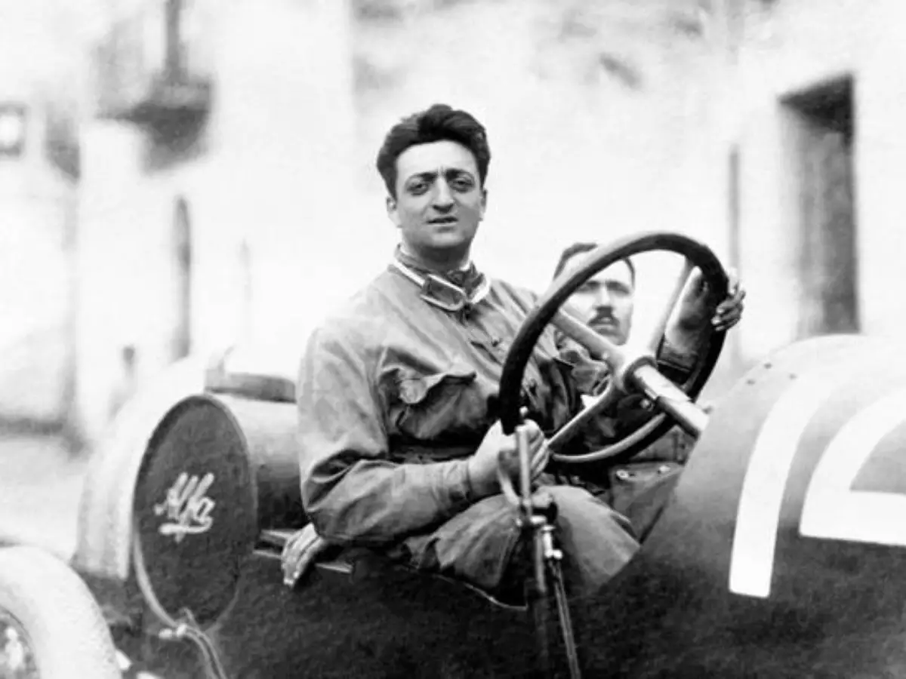
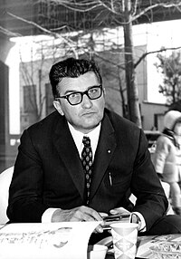
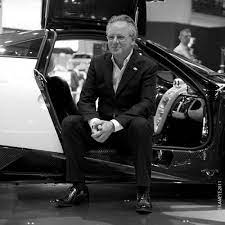
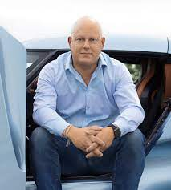

Enzo Ferrari
23-jan-24
Enzo Anselmo Giuseppe Maria Ferrari (Módena, 18 de fevereiro de 1898 – Maranello, 14 de agosto de 1988)
foi o fundador da Scuderia Ferrari e da fábrica de automóveis Ferrari.

Ferruccio Lamborghini
23-jan-24
Ferruccio Elio Arturo Lamborghini (Renazzo di Cento, 28 de abril de 1916 — Perugia, 20 de fevereiro de 1993)
foi um industrial italiano, conhecido principalmente por ter fundado uma marca de automóveis de grande luxo que carrega o seu nome.

Horacio Pagani
23-jan-24
Horacio Pagani (Casilda, 10 de novembro de 1955) é um empresário e engenheiro argentino radicado na Itália,
famoso mundialmente por fundar em 1992 e presidir a Pagani Automobili SpA.

Christian Von Koenigsegg
23-jan-24
Christian Erland Harald von Koenigsegg (Estocolmo, 2 de julho de 1972) é um engenheiro automotivo e empresário sueco.
É o fundador e CEO da empresa sueca de automóveis de alta performance Koenigsegg.